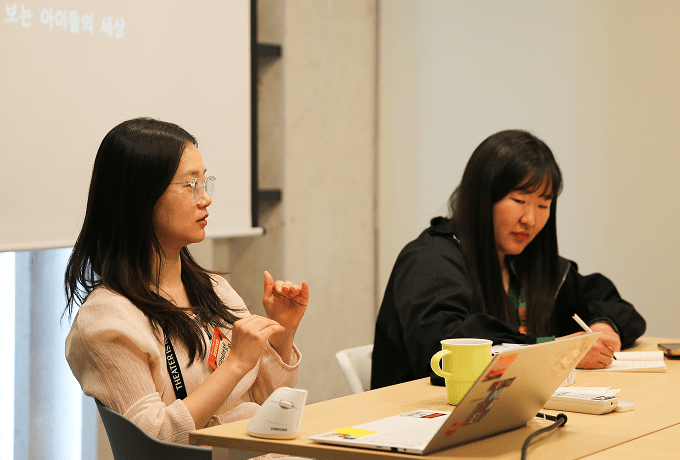
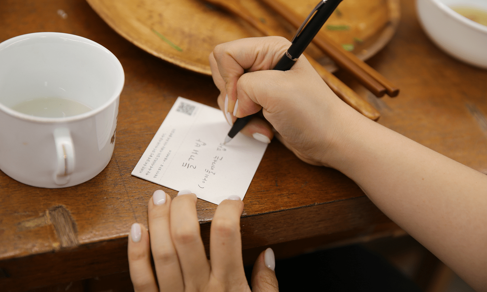

나의 뿌듯함이 아이들의 풍성함이 되는 모임. 다양한 온/오프라인 모임을 통해 나에게도 이롭고 아이들에게도 이로운 소셜 액션, 오렌지 농장.
농장 활동 속으로 함께 들어가 봅시다.
영화 속 세상보기
영화 <플로리다 프로젝트>,
아이들의 상상과 연대가 피워낸 작은 기적
2025년 아카데미 4관왕에 빛나는 션 베이커 감독의 전작 <플로리다 프로젝트>를 오렌지 농장에서 함께 관람하는 특별한 시간이 열렸습니다. 디즈니 월드 옆 가난한 모텔을 배경으로, 아이들의 눈에 비친 세상은 가혹한 현실 너머로 뻗어 갑니다.

<플로리다 프로젝트>는 디즈니 월드 인근 저예산 모텔에서 살아가는 여섯 살 무니와 엄마 헤일리의 일상을 따라갑니다. 션 베이커 감독은 아이의 시선을 통해 가난과 결핍의 현실을 담담하게 그리며, 상상과 놀이로 세상을 재구성하는 아이들의 힘을 섬세하게 보여줍니다.
무니는 낡은 벽을 성으로 만들고, 버려진 공간을 비밀기지 삼아 자신만의 세계를 창조합니다. 돌봄이 부재한 환경에서도 아이들끼리의 연대는 따뜻한 공동체를 만듭니다. 영화는 상상이 삶을 지탱해주는 힘이 될 수 있음을 조용한 감동으로 전하며, 마지막까지 아이들의 세계에 깊이 몰입하게 만듭니다.
함께 본 오렌지 농장 참여자들이 이 영화를 한 줄 평으로 추천했습니다.
쓰디쓴 현실을 가장 달콤하게 넘겨주는,
약에 입힌 슈가코팅 같은 영화
MBTI ‘S’가 추천하는 현실적이면서도
현실적이지 않은 미국 영화,
하지만 당신은 끝까지 보게 될 것이다.
환상인 듯 현실인 듯,
따뜻하면서도 차가운 영화
<플로리다 프로젝트>는 거창한 해결책 대신 아이들의 상상과 연대를 통해 우리 사회를 되돌아보게 합니다.
아이들이 자라야 할 환경, 그중에서 정말 중요한 것은 무엇일까?
이제, 우리 모두의 질문이 되어야 합니다.
건강한 식습관 만들기
제철의 맛을 기록하다, 식사 일기에서 찾은 건강한 삶
제철 재료를 활용한 건강한 식습관을 고민하며, 매일의 식사를 기록하는 소박하지만 깊이 있는 모임이 열렸습니다. 식사일기를 통해 ‘잘 먹는 법’을 함께 찾아 나선 이들의 2주간 여정을 들여다봤습니다.
이번 모임은 2주간 매일 식사일기를 쓰고, 함께 모여 그 경험을 나누며 제철 재료로 저녁 식사를 준비해 나누는 방식으로 진행됐습니다. 참여자들은 “건강한 식사에 정답은 없지만, 내 몸에 맞는 음식을 찾는 일이 중요하다”고 입을 모았습니다.
특히 제철 채소를 활용하면서 신선함과 짧은 조리 시간이 요리의 부담을 줄여줘 오히려 자주 해 먹게 되었고, 체력에도 긍정적 영향을 미쳤다는 후기도 있었습니다. 또 식사일기를 쓰면서 먹는 행위에 집중하게 되었고, 마음 상태와 식습관이 얼마나 밀접하게 연결되어 있는지 새롭게 깨달았다고 합니다.

이 모임은 식생활 취약 아동에게 전달되는 ‘사랑의 도시락’ 메뉴도 함께 고민했습니다. 나물 주먹밥, 들깨밥, 미나리전 등 제철 식재료로 만든 건강식을 아이들에게 추천하며, 함께 먹는 밥상 너머로 따뜻한 연대를 나눈 시간이었습니다.
여름엔 이 맛이지!
8월 제철 과일/채소 소개서
8월의 과일수박, 무화과, 토종 다래, 포도
8월의 채소다양한 품종의 호박, 가지, 토마토
새로운 맛을 찾아볼까!점점 더워지는 날씨에 한국에서도 잘 자라는 작물
공심채오크라
지금 내가 매일 먹는 음식, 정말 내 몸과 마음을 위한 선택일까?
나를 제대로 돌보는 일이 무엇인지
다시 마음속에 새겨보는 기회가 되기를 바랍니다.
사랑의도시락 봉사활동
정성으로 채운 한 끼, 사랑의 도시락
서울서부지역본부에서 ‘사랑의도시락’ 봉사활동이 진행됐습니다. 재료 손질부터 도시락 포장까지, 정성 가득한 하루를 보낸 봉사자들은 따뜻한 마음으로 아이들을 위한 식탁을 완성했습니다.
이른 아침, 서울서부지역본부에 모인 봉사자들은 ‘사랑의도시락’ 사업 OT를 시작으로 하루를 열었습니다. 위생 수칙에 따라 손 씻기, 손 소독, 앞치마와 마스크, 모자 착용을 마친 후 어제 먹은 도시락통 설거지팀과 오늘 도시락 재료 손질팀으로 나뉘어 본격적인 조리에 나섰습니다.
오전에는 애호박볶음과 제육볶음을 위한 애호박, 양파, 파, 당근 손질이 이어졌고, 점심 이후에는 본격적인 요리와 도시락 담기 작업이 진행됐습니다. 완성된 도시락은 애호박볶음, 제육볶음, 콘샐러드 그리고 지난 오렌지 농장 [건강한 식습관] 활동에서 아이들에게 추천한 건강식 ‘들깨밥’으로 구성된 총 129인분이 준비되었습니다.
봉사자들은 “누군가를 위해 음식을 준비하는 시간이 참 의미 있었다”, “힘들었지만 마음이 정화되는 소중한 경험이었다”고 입을 모았습니다. 아이들의 건강을 바라는 따뜻한 마음이 도시락과 함께 전달되었기를 바랍니다.
아이들이 건강하게 자랄 수 있는 환경은
결국, 어른들의 따뜻한 손끝에서 시작합니다.
함께 영화를 보고 아이들의 시선으로 세상을 바라보고, 식사일기를 통해 삶의 리듬을 정돈하고, 사랑의 도시락으로 아이들의 건강한 한 끼를 함께 고민한 이 모든 활동은 결국 ‘관계’와 ‘연대’의 힘을 말해줍니다.
아이들의 삶이 조금 더 따뜻해지고, 나의 하루도 더 깊어지는 경험. 다음 오렌지 농장 활동에서는 또 어떤 이야기가 기다리고 있을까요? 작은 실천이 큰 변화를 만드는 현장, 당신도 그 주인공이 될 수 있습니다. 다음 농장 활동에 함께 발을 들여보세요. 당신의 마음이 또 하나의 풍성함이 됩니다.